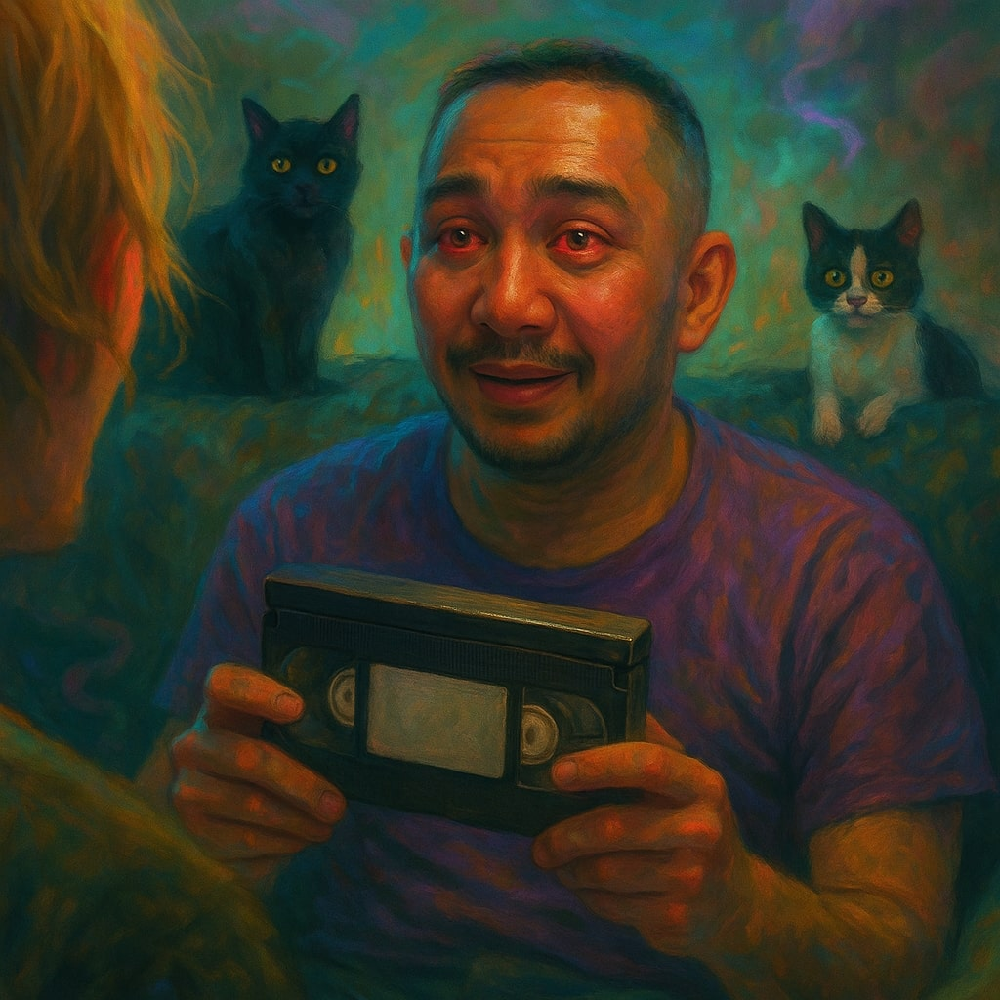

Somewhere between memory and playback, the story loops.
Liverpool. The present, maybe. A dead-end job, a lost tape, a street that doesn’t exist. Two friends haunted by the feeling that someone, or something, is watching.
There’s a VHS marked only by a warning: DO NOT WATCH ALONE.
The cats know something. Granny mumbles through static. Reality glitches. Time doubles back. The door hums just out of sight.
The tape waits to be played. Again. And again. Maybe this time, you'll break the loop. Or maybe you’re already inside it.
"Tell Joe the property isn't listed anymore. Because it's not... real anymore. Not entirely... [STATIC]... Larkhill Lane."
> SUBJECT: JOE
> STATUS: NUMB... AWAKENING
> AFFILIATION: HOME OFFICE (CIVIL SERVANT)
> PROFILE: Stocky frame, buzzed hair. Carries the weary warmth of forced smiles. A circuit-etched tattoo suggests a history with systems, logical and otherwise. Currently drawn into a system that defies logic.
> SUBJECT: NEWT
> STATUS: GROGGY... RECEPTIVE
> AFFILIATION: INDEPENDENT (SOUNDCLOUD ARTIST)
> PROFILE: Long blonde hair, sharp grin. A sly mischief in his eyes. Wears a slim gold chain. First point of contact for the anomalous transmission. Seems uniquely tuned to the unfolding weirdness.
> ASSOCIATES: DOOBIE & GOOBY - Feline entities. Seemingly aware of the situation's gravity.
> ARTIFACT: VHS-C42
> Unmarked cassette discovered in a secure government facility. No case number assigned.
> Contents are... anomalous. Displays events that defy linear time.
> Artifact is dormant. Hover to detect energy signature.

"There's more... the tape shows a door that isn't there."
> INTERVIEW NOTES: Granny claims Larkhill Lane vanished years ago. The cats remember.
> EVIDENCE 1: Map fragment discovered beneath the wallpaper.